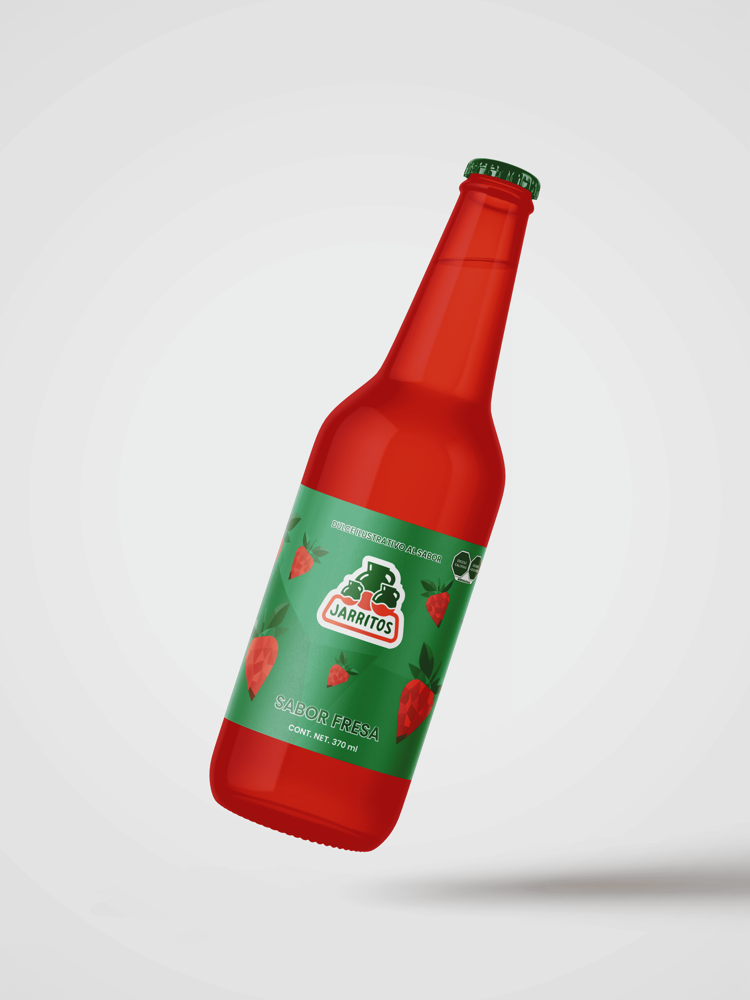

Packaging Design
This packaging concept reimagines the traditional jarrito bottle through the lens of Cubism, integrating abstract geometry, fragmented forms, and bold compositions.
The design blends cultural nostalgia with contemporary visual language, turning the bottle into a canvas that celebrates both heritage and artistic innovation.
Every angle reveals a dynamic interplay of color, shape, and texture, transforming the packaging into a collectible piece that elevates the product beyond its function.
This project highlights the power of packaging as an artistic medium and a storytelling tool within the branding experience.
